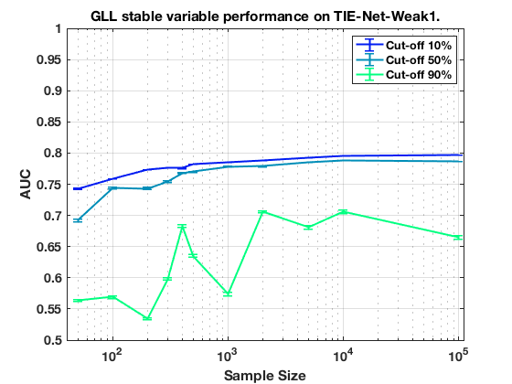
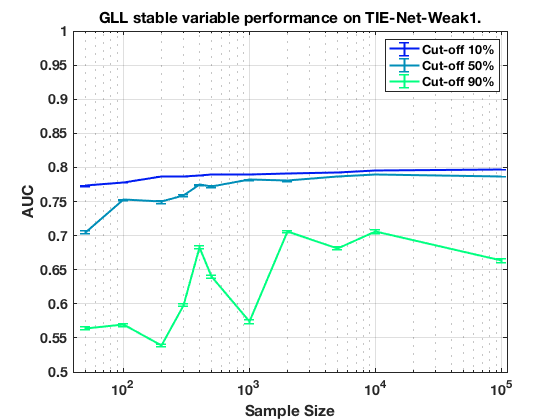

Stable Variable Experiments on MltNet with HPC K 3.
summary_stable_vars("MltNet", 1)
Figure 25. HPC_K_3 Model Generalizatbility.
____________________________________________

Figure 26. HPC_K_3 Feature Generalizability.
_____________________________________________

Table 133. Stability Cut Off Performance. Sample Size = 50. HPC_K_3.
_____________________________________________________________________
Stability Model_Generalizability Feature_Generalizability Number_Stable_Features Number_Non_Zero
_________ ______________________ ________________________ ______________________ _______________
'>=00%' ' 0.739 +/- 0.001 ' ' 0.773 +/- 0.001 ' ' 226.7 +/- 128.3 ' 3
'>=10%' ' 0.742 +/- 0.001 ' ' 0.773 +/- 0.001 ' ' 226.7 +/- 128.3 ' 3
'>=20%' ' 0.730 +/- 0.001 ' ' 0.766 +/- 0.001 ' ' 180.3 +/- 103.0 ' 3
'>=30%' ' 0.721 +/- 0.002 ' ' 0.739 +/- 0.002 ' ' 95.7 +/- 54.4 ' 3
'>=40%' ' 0.720 +/- 0.002 ' ' 0.739 +/- 0.002 ' ' 95.7 +/- 54.4 ' 3
'>=50%' ' 0.695 +/- 0.002 ' ' 0.710 +/- 0.002 ' ' 106.0 +/- 74.2 ' 2
'>=60%' ' 0.688 +/- 0.002 ' ' 0.701 +/- 0.002 ' ' 194.0 +/- 0.0 ' 1
'>=70%' ' 0.662 +/- 0.002 ' ' 0.676 +/- 0.002 ' ' 174.0 +/- 0.0 ' 1
'>=80%' ' 0.671 +/- 0.002 ' ' 0.679 +/- 0.002 ' ' 165.0 +/- 0.0 ' 1
'>=90%' ' 0.589 +/- 0.002 ' ' 0.589 +/- 0.002 ' ' 91.0 +/- 0.0 ' 1
Table 134. Stability Cut Off Performance. Sample Size = 100. HPC_K_3.
______________________________________________________________________
Stability Model_Generalizability Feature_Generalizability Number_Stable_Features Number_Non_Zero
_________ ______________________ ________________________ ______________________ _______________
'>=00%' ' 0.760 +/- 0.001 ' ' 0.778 +/- 0.001 ' ' 288.0 +/- 156.8 ' 3
'>=10%' ' 0.759 +/- 0.001 ' ' 0.778 +/- 0.001 ' ' 288.0 +/- 156.8 ' 3
'>=20%' ' 0.755 +/- 0.001 ' ' 0.771 +/- 0.001 ' ' 197.3 +/- 112.8 ' 3
'>=30%' ' 0.750 +/- 0.001 ' ' 0.760 +/- 0.001 ' ' 211.5 +/- 148.8 ' 2
'>=40%' ' 0.751 +/- 0.001 ' ' 0.760 +/- 0.001 ' ' 211.5 +/- 148.8 ' 2
'>=50%' ' 0.746 +/- 0.001 ' ' 0.755 +/- 0.001 ' ' 177.0 +/- 124.5 ' 2
'>=60%' ' 0.733 +/- 0.002 ' ' 0.739 +/- 0.002 ' ' 257.0 +/- 0.0 ' 1
'>=70%' ' 0.721 +/- 0.002 ' ' 0.724 +/- 0.002 ' ' 233.0 +/- 0.0 ' 1
'>=80%' ' 0.694 +/- 0.002 ' ' 0.694 +/- 0.002 ' ' 163.0 +/- 0.0 ' 1
'>=90%' ' 0.596 +/- 0.002 ' ' 0.596 +/- 0.002 ' ' 115.0 +/- 0.0 ' 1
Table 135. Stability Cut Off Performance. Sample Size = 200. HPC_K_3.
______________________________________________________________________
Stability Model_Generalizability Feature_Generalizability Number_Stable_Features Number_Non_Zero
_________ ______________________ ________________________ ______________________ _______________
'>=00%' ' 0.774 +/- 0.000 ' ' 0.786 +/- 0.000 ' ' 231.0 +/- 131.6 ' 3
'>=10%' ' 0.774 +/- 0.000 ' ' 0.786 +/- 0.000 ' ' 231.0 +/- 131.6 ' 3
'>=20%' ' 0.775 +/- 0.000 ' ' 0.785 +/- 0.000 ' ' 191.0 +/- 109.1 ' 3
'>=30%' ' 0.772 +/- 0.000 ' ' 0.781 +/- 0.000 ' ' 116.7 +/- 66.5 ' 3
'>=40%' ' 0.774 +/- 0.000 ' ' 0.781 +/- 0.000 ' ' 116.7 +/- 66.5 ' 3
'>=50%' ' 0.760 +/- 0.001 ' ' 0.769 +/- 0.001 ' ' 81.0 +/- 46.2 ' 3
'>=60%' ' 0.702 +/- 0.002 ' ' 0.709 +/- 0.002 ' ' 74.5 +/- 52.0 ' 2
'>=70%' ' 0.703 +/- 0.002 ' ' 0.713 +/- 0.002 ' ' 61.0 +/- 0.0 ' 1
'>=80%' ' 0.621 +/- 0.002 ' ' 0.629 +/- 0.002 ' ' 58.0 +/- 0.0 ' 1
'>=90%' ' 0.540 +/- 0.001 ' ' 0.546 +/- 0.001 ' ' 22.0 +/- 0.0 ' 1
Table 136. Stability Cut Off Performance. Sample Size = 300. HPC_K_3.
______________________________________________________________________
Stability Model_Generalizability Feature_Generalizability Number_Stable_Features Number_Non_Zero
_________ ______________________ ________________________ ______________________ _______________
'>=00%' ' 0.778 +/- 0.000 ' ' 0.787 +/- 0.000 ' ' 133.0 +/- 74.8 ' 3
'>=10%' ' 0.776 +/- 0.000 ' ' 0.787 +/- 0.000 ' ' 133.0 +/- 74.8 ' 3
'>=20%' ' 0.779 +/- 0.000 ' ' 0.787 +/- 0.000 ' ' 112.7 +/- 63.0 ' 3
'>=30%' ' 0.780 +/- 0.000 ' ' 0.786 +/- 0.000 ' ' 42.7 +/- 23.5 ' 3
'>=40%' ' 0.779 +/- 0.000 ' ' 0.786 +/- 0.000 ' ' 42.7 +/- 23.5 ' 3
'>=50%' ' 0.754 +/- 0.002 ' ' 0.759 +/- 0.002 ' ' 38.3 +/- 21.3 ' 3
'>=60%' ' 0.731 +/- 0.002 ' ' 0.733 +/- 0.002 ' ' 36.0 +/- 24.7 ' 2
'>=70%' ' 0.715 +/- 0.002 ' ' 0.716 +/- 0.002 ' ' 71.0 +/- 0.0 ' 1
'>=80%' ' 0.624 +/- 0.003 ' ' 0.624 +/- 0.003 ' ' 70.0 +/- 0.0 ' 1
'>=90%' ' 0.598 +/- 0.002 ' ' 0.598 +/- 0.002 ' ' 20.0 +/- 0.0 ' 1
Table 137. Stability Cut Off Performance. Sample Size = 400. HPC_K_3.
______________________________________________________________________
Stability Model_Generalizability Feature_Generalizability Number_Stable_Features Number_Non_Zero
_________ ______________________ ________________________ ______________________ _______________
'>=00%' ' 0.777 +/- 0.000 ' ' 0.789 +/- 0.000 ' ' 142.7 +/- 77.8 ' 3
'>=10%' ' 0.777 +/- 0.000 ' ' 0.789 +/- 0.000 ' ' 142.7 +/- 77.8 ' 3
'>=20%' ' 0.778 +/- 0.000 ' ' 0.787 +/- 0.000 ' ' 95.0 +/- 51.7 ' 3
'>=30%' ' 0.777 +/- 0.000 ' ' 0.786 +/- 0.000 ' ' 75.0 +/- 41.9 ' 3
'>=40%' ' 0.777 +/- 0.000 ' ' 0.786 +/- 0.000 ' ' 75.0 +/- 41.9 ' 3
'>=50%' ' 0.765 +/- 0.001 ' ' 0.770 +/- 0.001 ' ' 72.0 +/- 40.4 ' 3
'>=60%' ' 0.733 +/- 0.002 ' ' 0.737 +/- 0.002 ' ' 57.3 +/- 32.2 ' 3
'>=70%' ' 0.716 +/- 0.002 ' ' 0.719 +/- 0.002 ' ' 40.3 +/- 22.4 ' 3
'>=80%' ' 0.707 +/- 0.002 ' ' 0.707 +/- 0.002 ' ' 39.0 +/- 26.9 ' 2
'>=90%' ' 0.654 +/- 0.003 ' ' 0.654 +/- 0.003 ' ' 35.0 +/- 24.0 ' 2
Table 138. Stability Cut Off Performance. Sample Size = 500. HPC_K_3.
______________________________________________________________________
Stability Model_Generalizability Feature_Generalizability Number_Stable_Features Number_Non_Zero
_________ ______________________ ________________________ ______________________ _______________
'>=00%' ' 0.784 +/- 0.000 ' ' 0.789 +/- 0.000 ' ' 181.3 +/- 99.2 ' 3
'>=10%' ' 0.783 +/- 0.000 ' ' 0.789 +/- 0.000 ' ' 181.3 +/- 99.2 ' 3
'>=20%' ' 0.783 +/- 0.000 ' ' 0.788 +/- 0.000 ' ' 132.3 +/- 72.9 ' 3
'>=30%' ' 0.782 +/- 0.000 ' ' 0.787 +/- 0.000 ' ' 93.3 +/- 52.2 ' 3
'>=40%' ' 0.782 +/- 0.000 ' ' 0.787 +/- 0.000 ' ' 93.3 +/- 52.2 ' 3
'>=50%' ' 0.769 +/- 0.001 ' ' 0.772 +/- 0.001 ' ' 75.3 +/- 42.6 ' 3
'>=60%' ' 0.758 +/- 0.001 ' ' 0.760 +/- 0.001 ' ' 87.5 +/- 61.2 ' 2
'>=70%' ' 0.740 +/- 0.002 ' ' 0.742 +/- 0.002 ' ' 174.0 +/- 0.0 ' 1
'>=80%' ' 0.712 +/- 0.002 ' ' 0.715 +/- 0.002 ' ' 136.0 +/- 0.0 ' 1
'>=90%' ' 0.657 +/- 0.003 ' ' 0.660 +/- 0.003 ' ' 117.0 +/- 0.0 ' 1
Table 139. Stability Cut Off Performance. Sample Size = 1000. HPC_K_3.
_______________________________________________________________________
Stability Model_Generalizability Feature_Generalizability Number_Stable_Features Number_Non_Zero
_________ ______________________ ________________________ ______________________ _______________
'>=00%' ' 0.785 +/- 0.000 ' ' 0.790 +/- 0.000 ' ' 51.7 +/- 20.7 ' 3
'>=10%' ' 0.785 +/- 0.000 ' ' 0.790 +/- 0.000 ' ' 51.7 +/- 20.7 ' 3
'>=20%' ' 0.785 +/- 0.000 ' ' 0.789 +/- 0.000 ' ' 49.7 +/- 21.3 ' 3
'>=30%' ' 0.784 +/- 0.000 ' ' 0.789 +/- 0.000 ' ' 43.0 +/- 23.1 ' 3
'>=40%' ' 0.784 +/- 0.000 ' ' 0.789 +/- 0.000 ' ' 43.0 +/- 23.1 ' 3
'>=50%' ' 0.778 +/- 0.001 ' ' 0.782 +/- 0.001 ' ' 25.7 +/- 13.7 ' 3
'>=60%' ' 0.780 +/- 0.000 ' ' 0.783 +/- 0.000 ' ' 25.0 +/- 13.9 ' 3
'>=70%' ' 0.753 +/- 0.002 ' ' 0.755 +/- 0.002 ' ' 37.0 +/- 25.5 ' 2
'>=80%' ' 0.720 +/- 0.002 ' ' 0.721 +/- 0.002 ' ' 67.0 +/- 0.0 ' 1
'>=90%' ' 0.641 +/- 0.003 ' ' 0.641 +/- 0.003 ' ' 61.0 +/- 0.0 ' 1
Table 140. Stability Cut Off Performance. Sample Size = 2000. HPC_K_3.
_______________________________________________________________________
Stability Model_Generalizability Feature_Generalizability Number_Stable_Features Number_Non_Zero
_________ ______________________ ________________________ ______________________ _______________
'>=00%' ' 0.788 +/- 0.000 ' ' 0.791 +/- 0.000 ' ' 18.3 +/- 7.1 ' 3
'>=10%' ' 0.788 +/- 0.000 ' ' 0.791 +/- 0.000 ' ' 18.3 +/- 7.1 ' 3
'>=20%' ' 0.788 +/- 0.000 ' ' 0.791 +/- 0.000 ' ' 10.7 +/- 3.6 ' 3
'>=30%' ' 0.788 +/- 0.000 ' ' 0.790 +/- 0.000 ' ' 9.3 +/- 4.0 ' 3
'>=40%' ' 0.788 +/- 0.000 ' ' 0.790 +/- 0.000 ' ' 9.3 +/- 4.0 ' 3
'>=50%' ' 0.781 +/- 0.001 ' ' 0.783 +/- 0.001 ' ' 8.3 +/- 4.2 ' 3
'>=60%' ' 0.756 +/- 0.002 ' ' 0.757 +/- 0.002 ' ' 8.3 +/- 4.2 ' 3
'>=70%' ' 0.736 +/- 0.002 ' ' 0.736 +/- 0.002 ' ' 6.3 +/- 3.1 ' 3
'>=80%' ' 0.685 +/- 0.002 ' ' 0.686 +/- 0.002 ' ' 6.3 +/- 3.1 ' 3
'>=90%' ' 0.690 +/- 0.002 ' ' 0.689 +/- 0.002 ' ' 9.0 +/- 5.7 ' 2
Table 141. Stability Cut Off Performance. Sample Size = 5000. HPC_K_3.
_______________________________________________________________________
Stability Model_Generalizability Feature_Generalizability Number_Stable_Features Number_Non_Zero
_________ ______________________ ________________________ ______________________ _______________
'>=00%' ' 0.792 +/- 0.000 ' ' 0.793 +/- 0.000 ' ' 19.7 +/- 1.9 ' 3
'>=10%' ' 0.792 +/- 0.000 ' ' 0.793 +/- 0.000 ' ' 19.7 +/- 1.9 ' 3
'>=20%' ' 0.791 +/- 0.000 ' ' 0.792 +/- 0.000 ' ' 16.3 +/- 2.3 ' 3
'>=30%' ' 0.790 +/- 0.000 ' ' 0.791 +/- 0.000 ' ' 14.7 +/- 3.2 ' 3
'>=40%' ' 0.790 +/- 0.000 ' ' 0.791 +/- 0.000 ' ' 14.7 +/- 3.2 ' 3
'>=50%' ' 0.782 +/- 0.001 ' ' 0.783 +/- 0.001 ' ' 14.3 +/- 3.1 ' 3
'>=60%' ' 0.767 +/- 0.001 ' ' 0.768 +/- 0.001 ' ' 13.3 +/- 3.3 ' 3
'>=70%' ' 0.752 +/- 0.001 ' ' 0.753 +/- 0.001 ' ' 12.3 +/- 3.3 ' 3
'>=80%' ' 0.705 +/- 0.002 ' ' 0.705 +/- 0.002 ' ' 15.5 +/- 1.1 ' 2
'>=90%' ' 0.611 +/- 0.002 ' ' 0.611 +/- 0.002 ' ' 11.0 +/- 4.2 ' 2
Table 142. Stability Cut Off Performance. Sample Size = 10000. HPC_K_3.
________________________________________________________________________
Stability Model_Generalizability Feature_Generalizability Number_Stable_Features Number_Non_Zero
_________ ______________________ ________________________ ______________________ _______________
'>=00%' ' 0.795 +/- 0.000 ' ' 0.796 +/- 0.000 ' ' 78.3 +/- 24.3 ' 3
'>=10%' ' 0.795 +/- 0.000 ' ' 0.796 +/- 0.000 ' ' 78.3 +/- 24.3 ' 3
'>=20%' ' 0.794 +/- 0.000 ' ' 0.795 +/- 0.000 ' ' 56.3 +/- 19.7 ' 3
'>=30%' ' 0.792 +/- 0.000 ' ' 0.793 +/- 0.000 ' ' 49.0 +/- 20.2 ' 3
'>=40%' ' 0.792 +/- 0.000 ' ' 0.793 +/- 0.000 ' ' 49.0 +/- 20.2 ' 3
'>=50%' ' 0.783 +/- 0.001 ' ' 0.783 +/- 0.001 ' ' 47.3 +/- 20.7 ' 3
'>=60%' ' 0.777 +/- 0.001 ' ' 0.777 +/- 0.001 ' ' 45.7 +/- 21.0 ' 3
'>=70%' ' 0.768 +/- 0.001 ' ' 0.768 +/- 0.001 ' ' 43.3 +/- 19.7 ' 3
'>=80%' ' 0.747 +/- 0.001 ' ' 0.747 +/- 0.001 ' ' 60.5 +/- 32.2 ' 2
'>=90%' ' 0.767 +/- 0.001 ' ' 0.767 +/- 0.001 ' ' 50.5 +/- 27.2 ' 2
Table 143. Stability Cut Off Performance. Sample Size = 100000. HPC_K_3.
_________________________________________________________________________
Stability Model_Generalizability Feature_Generalizability Number_Stable_Features Number_Non_Zero
_________ ______________________ ________________________ ______________________ _______________
'>=00%' ' 0.797 +/- 0.000 ' ' 0.797 +/- 0.000 ' ' 47.7 +/- 9.1 ' 3
'>=10%' ' 0.797 +/- 0.000 ' ' 0.797 +/- 0.000 ' ' 47.7 +/- 9.1 ' 3
'>=20%' ' 0.797 +/- 0.000 ' ' 0.797 +/- 0.000 ' ' 39.0 +/- 10.3 ' 3
'>=30%' ' 0.795 +/- 0.000 ' ' 0.795 +/- 0.000 ' ' 33.7 +/- 11.7 ' 3
'>=40%' ' 0.795 +/- 0.000 ' ' 0.795 +/- 0.000 ' ' 33.7 +/- 11.7 ' 3
'>=50%' ' 0.789 +/- 0.000 ' ' 0.789 +/- 0.000 ' ' 33.3 +/- 11.8 ' 3
'>=60%' ' 0.765 +/- 0.001 ' ' 0.765 +/- 0.001 ' ' 32.0 +/- 12.3 ' 3
'>=70%' ' 0.734 +/- 0.001 ' ' 0.734 +/- 0.001 ' ' 31.7 +/- 12.4 ' 3
'>=80%' ' 0.676 +/- 0.002 ' ' 0.676 +/- 0.002 ' ' 47.0 +/- 18.4 ' 2
'>=90%' ' 0.574 +/- 0.002 ' ' 0.574 +/- 0.002 ' ' 46.0 +/- 19.1 ' 2